DeepSeek Harness(dsh)是 DeepSeek AI 开源的 agent harness(智能体驱动框架)——一个让 AI agent 跑起来、记住对话、调用工具、执行命令的完整运行时。
它不是单一应用,而是一个 monorepo 工具箱:
dsh web)— 浏览器里对话的界面,默认 http://127.0.0.1:3080dsh --profile headless "task")— 跑一次性任务dsh --profile sdk)— JSON-RPC 远程调用dsh --profile acp)— Agent Client Protocol 自动化接口dsh --profile sdk-minimal)— 显式 SDK 树,无 dsh-base 叠加核心哲学:"There is no privileged core to patch: you extend dsh by mounting a plugin beside the others, and registrations are effects that unwind when their plugin unloads."(docs/architecture.md)
整个系统由 Cordis 框架驱动——一个轻量级 IoC 容器,灵感来自 Koishi / Satori 生态(cordiverse/cordis,论文 A Programming Paradigm for Spatiotemporal Composability arXiv 2608.25512)。
| 传统框架 | DeepSeek Harness (Cordis 全插件) |
|---|---|
| 核心模块改不动,只能"扩展" | 核心也是插件,你能直接 patch / 替换 |
| 注册 = 静态配置 | 注册 = effect(可逆、可回滚) |
| 配置热重载 = 复杂 | 插件卸载时 effect 自动反向 |
| "我能不能动这一行?" | "我能不能把这一行换成我的 plugin?" |
用 oh-my-mermaid 的 12 个 perspective 划分,以下 4 个对 DeepSeek Harness 最关键:

按贡献者自己的推荐路径:
| 顺序 | 文件 / 目录 | 内容 |
|---|---|---|
| 1 | README.md | 10 分钟搞清这是什么、怎么跑 |
| 2 | AGENTS.md(19KB) | 仓库约定 + 52 packages 分组表 + 命令清单 |
| 3 | docs/architecture.md | Cordis / profile / bundle / 核心包设计(改 packages/ 必读) |
| 4 | docs/cordis-primer.md | Cordis 框架入门(不懂 Cordis 必读) |
| 5 | docs/glossary.md | 术语表(capability seam / effect / waterfall) |
| 6 | docs/AGENTS.md | 如何写文档(给贡献者) |
用 PocketFlow-Codebase-Knowledge 的方法论,识别出本项目 5 个最核心抽象。每个抽象独立成节,放完整描述 + 关键文件 + 在 ctx.* 里的键名。
类比: 像 Spring 的 ApplicationContext,但一切都是 effect。
职责: 挂载 / 卸载 plugin;管理 ctx 上的服务注册;支持 fork / merge。
关键文件: vendor/cordis/(@deepseek-ai/cordis 重新作用域化),docs/cordis-primer.md
ctx 键: 无(plugin tree 本身)
类比: 像数据库的 WAL(Write-Ahead Log),append-only 不可变。
职责: 持久化所有 SessionEvent;提供内存查询 / 投影。
关键文件: packages/core/session/src/
ctx 键: ctx.sessions
不变量: SCHEMA_VERSION monotonic;老格式直接拒收。
类比: 像 React 的 render loop——每次 step 重新组装 prompt + 调 LLM + 跑工具。
职责: 实现 Agent interface;管理 turn / step / tool-call 状态机。
关键文件: packages/core/agent/,packages/core/agent-loop/
ctx 键: ctx.agents / ctx.agentLoop
类比: 像 Java SPI 或 OSGi 的 service layer——但每个 seam 必是完整的"三角色":
关键例子: shell/、llm/、web/、subagent/、compaction/、workflow/
文档: docs/capability-seams.md
类比: 像 Docker 的多层镜像——bundle 是层,profile 是组合。
职责: 启动时把若干 bundle 叠加,每层都能 patch 上一层的配置。
叠加顺序:
profile.bundles[i] → profile.cordis.patch.yml → home cordis.patch.yml → --patch overlay
关键文件: packages/bundle/(base/web-app/headless/sdk-app/acp-app/sdk-minimal),packages/boot/app-boot/
调试: dsh --profile web --dump-config 打印完整树
按 Understanding-Optimism-Codebase 的 how-X-works 命名法,本教程分 4 个 HTML 章节:
| # | 文件名 | 视角 | 来源 skill |
|---|---|---|---|
| 00 | overview.html | 总览 | oh-my-mermaid perspective |
| 01 | plugin-system.html | 插件系统递归下钻 | oh-my-mermaid 递归 |
| 02 | cordis-harness.html | Cordis + 5 抽象 | PocketFlow 抽象 |
| 03 | package-tour.html | 52 packages 巡礼 | agents-reverse-engineer |
| 04 | study-cards/ | 学习卡片 | tutor-skills |